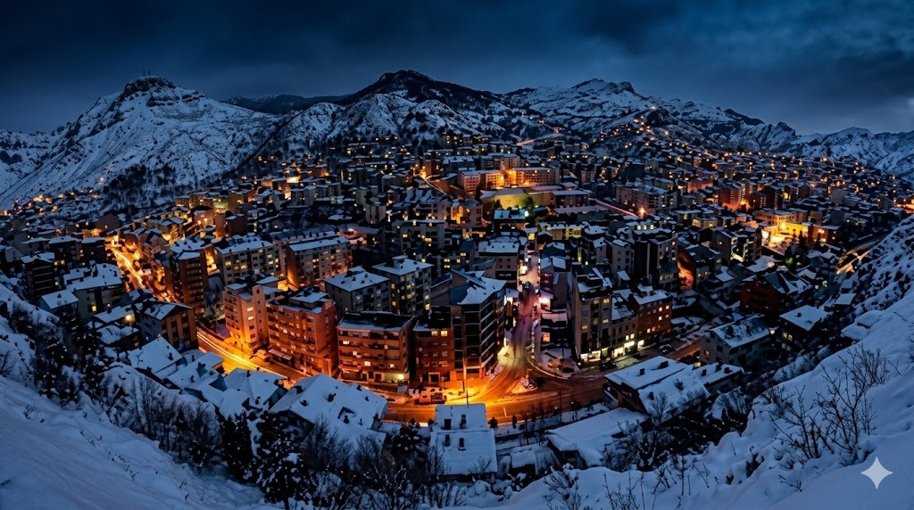
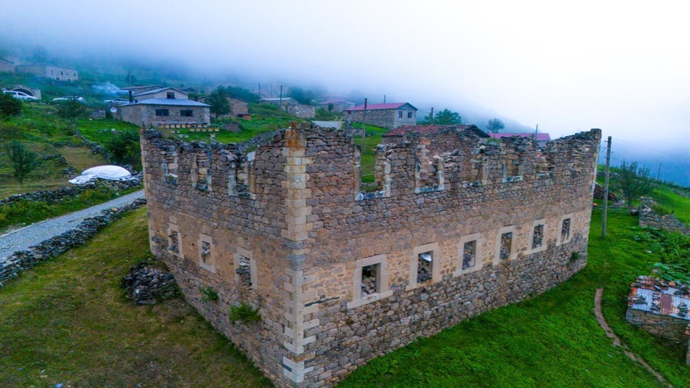
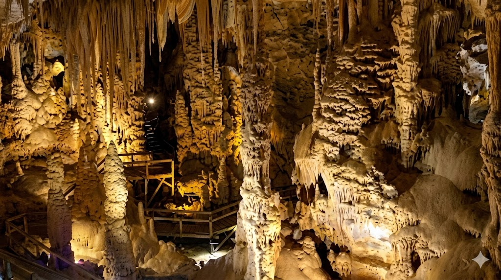
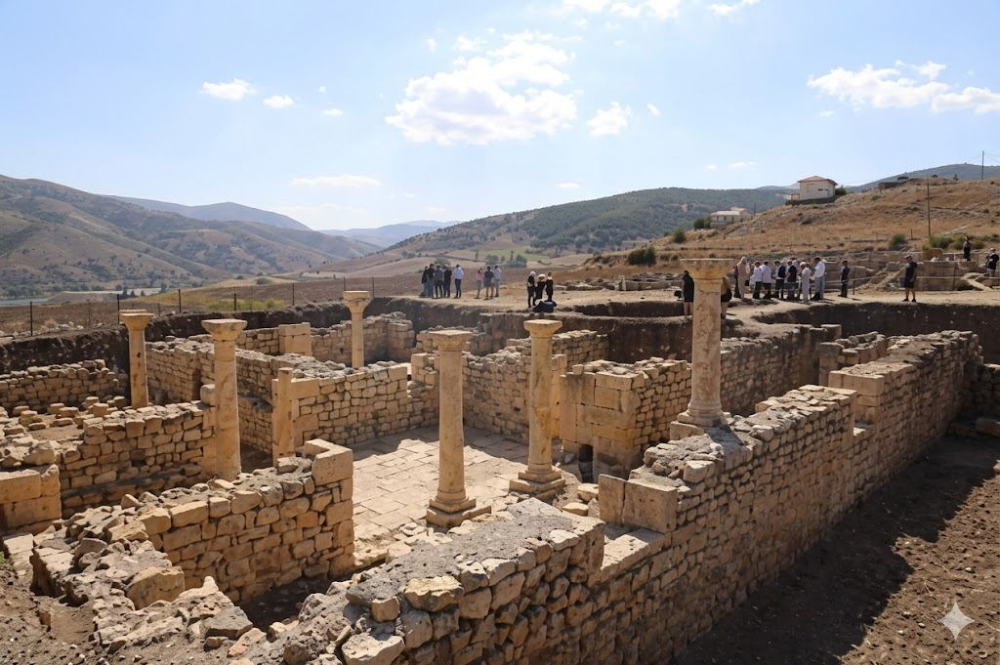
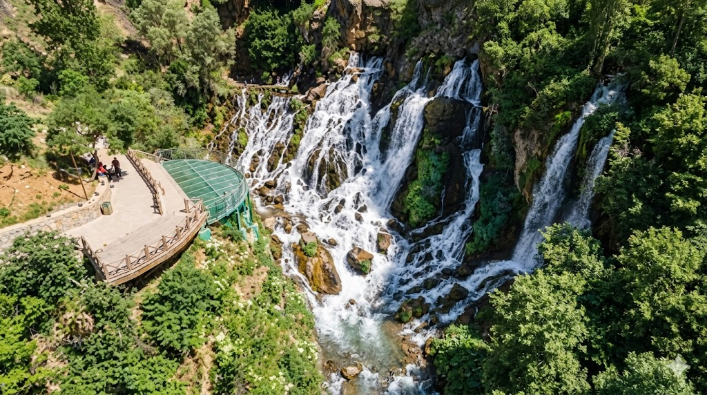
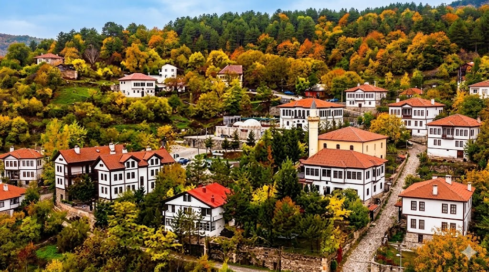

Doğanın Ruh Kazandığı Şehir: Gümüşhane

Gümüşhane Genel Görünüm
Kendine has parıltısı ile göze çarpan şehir merkezi, küçük ve samimi bir yaşam alanı sunmakta. Çevrelendiği dağlık ve ormanlık arazi insanı rahatlatmaktadır. Kışın karlar ile büründüğünde kartpostallık görüntüler ortaya çıkartmaktadır.

Artabel Gölleri Tabiat Parkı
3.000 metreyi aşan zirvelerin arasında birer inci gibi dizilmiş 20'ye yakın buzul gölü, gökyüzünün en güzel mavilerini sularında yansıtıyor.Rengarenk açan nadide Alp çiçekleri, yemyeşil çayırlar ve şanslıysanız uzaktan selamlaşabileceğiniz yaban keçileriyle doğanın en saf, en canlı haline tanıklık edeceksiniz.Doğayla bütünleşebileceğiniz yürüyüş rotalarında adımlarken her virajda yeni bir manzara ile karşılaşacak; göl kenarında kuracağınız bir kamp ile milyonlarca yıldızın altında uyumanın ayrıcalığını yaşayacaksınız.Şelaleler, sarp kayalıklar, buzullar ve göllerin oluşturduğu muhteşem kompozisyonlar, deklanşörünüze basacağınız her anı eşsiz bir tabloya dönüştürüyor.

Santa Harabeleri
Yüksek dağların arasına gizlenmiş bu izole yerleşim yeri, ulaşılmaz konumu ve sisler içindeki silüetiyle dünyanın en ünlü antik kentlerine meydan okuyan bir atmosfere sahip.17. yüzyılda usta madenciler tarafından kurulan ve 7 mahalleden oluşan bu eşsiz alan; sivil mimarinin en güzel örneklerini sunan taş evleri, tarihi kiliseleri ve çeşmeleriyle adeta zamanda yolculuk hissi veriyor.Yemyeşil vahşi Karadeniz doğasının tarihi taş sokakları usulca sardığı bu rotada adımlarken, tarihin fısıltılarını duyacak ve eşsiz fotoğraf kareleri yakalayacaksınız.

Karaca Mağarası
Damlayan suların içindeki kalsiyum karbonatın milim milim birikmesiyle oluşan devasa sarkıtlar, dikitler, sütunlar ve mağara incileri; burayı adeta fantastik bir yeraltı sarayına dönüştürüyor.Sızıntı sularındaki demir ve magnezyum mineralleri sayesinde mağara duvarları tekdüze bir grilikten kurtulup beyaz, kahverengi ve kızılın en çarpıcı tonlarıyla boyanmış doğal bir tablo sunuyor.İçerideki hava sıcaklığı ve nem yaz-kış sabit kalır. Toz ve polenden tamamen arınmış bu yoğun oksijenli izole ortam, astım ve solunum yolu rahatsızlıkları için doğal bir terapi merkezi işlevi görüyor.

Satala Antik Kenti
Bölgenin rastgele seçilmesinin aksine, Fırat havzası ile Karadeniz arasındaki kilit dağ geçitlerini kontrol altında tutmak için kurulan bu devasa karargah, Roma'nın doğudaki en büyük kalkanı ve askeri harekat merkeziydi.Satala, binlerce tam donanımlı Roma askerinin (lejyoner) yaşadığı, kendi hamamları, su kemerleri ve devasa savunma duvarları olan yüksek disiplinli bir askeri mühendislik sistemidir.Askeri bir üs olmasının yanı sıra sanat ve ticaretin de kesişim noktasıdır. 1870'lerde burada bulunan ve bugün British Museum'da sergilenen ünlü bronz "Satala Afroditi" ile son kazılarda ortaya çıkan nadir Roma lejyoner zırhları kentin barındırdığı zenginliğin kanıtıdır.

Tomara Şelalesi
Tomara'nın arka planında kusursuz bir yeraltı sistemi çalışır. Dağın içindeki kireçtaşı (karstik) boşluklarında biriken yeraltı suları, yüksek basınçla yamaçtaki 40 farklı kayalık çatlaktan aynı anda yeryüzüne fışkırır. Bu mekanizma, suyun adeta dağın damarlarından patlayarak çıktığı nadir bir doğa olayıdır.Dağın ortasında 15-20 metrelik geniş bir hattan kaynayan ve yaklaşık 25 metre aşağı dökülen sular, dik kayalıkların üzerinde parçalanarak bembeyaz, kesintisiz ve görkemli bir su perdesi oluşturur.Suyun 40 farklı noktadan kayalara çarparak vadi tabanına inmesi benzersiz bir ses dalgası yaratır. Aynı zamanda havaya karışan su zerreleri, etrafında yaz aylarının kavurucu sıcağını bile anında kıran oldukça ferahlatıcı, izole bir mikroklima alanı oluşturur.

Şehrin Dokusu ve Mirası
Gümüşhane, doğal güzellikleri, gölleri ve yaylaları ile Karadeniz Bölgesi'nin en önemli doğa turizmi merkezlerinden biridir. Süleymaniye Mahallesi gibi tarihi miraslara ev sahipliği yapar.
Takımımız: Gümüşhanespor
"Kırmızı-Beyaz" ruhuyla sahaya çıkan Gümüşhanespor, Türk futbolunun en köklü ve tutkulu camialarından biridir. Takımın kırmızı beyaz renkleri, sokakların her köşesinde hissedilir.